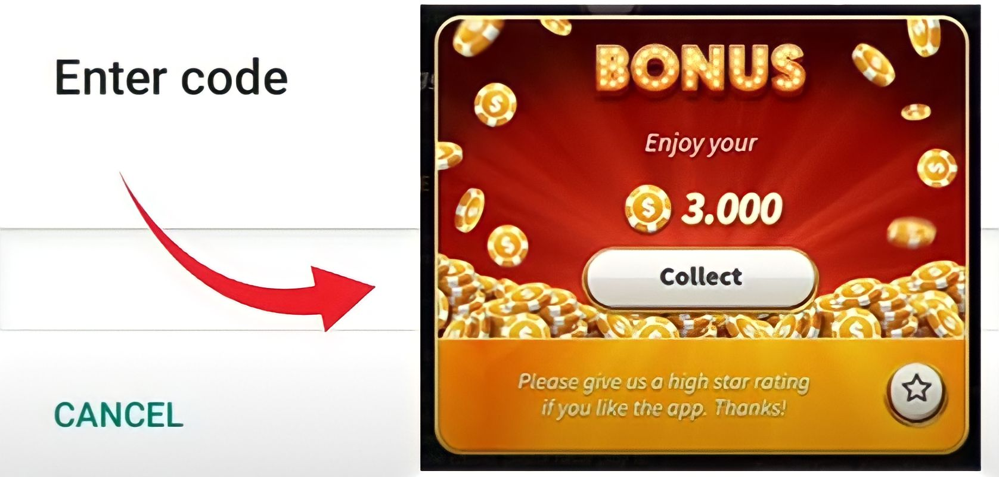

Suchen Sie nach Slotpark Bonus Code und Free Chips? Holen Sie sich Slotpark Bonus Code und nützliche Tipps, um Ihr Spielerlebnis zu verbessern.
Wenn du das Spiel Slotpark noch nicht installiert hast, kannst du es im Play Store und App Store herunterladen.
Slotpark Bonus Codes, Free Chips und Münzen werden zuerst auf dieser Website geteilt, die wir von der offiziellen Social-Media-Seite von Slotpark sammeln. Überprüfen Sie diesen Beitrag täglich und setzen Sie ein Lesezeichen für die neuesten Bonus Code, Free Chips und Münze Links zu Belohnungen im Slotpark Spiel zu sammeln.
Slotpark Bonus Codes sind Promotion-Codes, die Spieler verwenden können, um spezielle Boni und Belohnungen im Slotpark Handyspiel zu erhalten. Diese Codes werden in der Regel von den Spielentwicklern zur Verfügung gestellt. Zusätzliche Vorteile wie kostenlose Münzen, zusätzliche Drehungen oder exklusive Gegenstände im Spiel können erhalten werden, wenn ein Spieler einen gültigen Bonuscode eingibt. Die Codes geben den Spielern die Möglichkeit, ihr Spielerlebnis zu verbessern und möglicherweise ihre Gewinnchancen zu erhöhen.
Gratis-Chips in einem Spiel sind eine virtuelle Währung, die Spieler erhalten können, ohne echtes Geld einzusetzen. Diese Chips dienen dem Zweck, die Spielautomaten des Spiels zu spielen und an verschiedenen anderen Spielautomatenaktivitäten teilzunehmen. Sie können als täglicher Anmeldebonus oder als Belohnung für das Erfüllen bestimmter Aufgaben oder Leistungen im Spiel erworben werden. Durch den Erhalt von Gratis-Chips können die Spieler ihr Spiel fortsetzen, auch wenn sie ihr ursprüngliches Guthaben aufgebraucht haben.
Um kostenlose Chips in Slotpark zu erhalten, können Sie ganz einfach einen Bonuscode verwenden. Folgen Sie einfach diesen einfachen Schritten, um einen Bonuscode zu verwenden:
Es ist wichtig, daran zu denken, dass bestimmte Bonuscodes besondere Regeln haben können, wie zum Beispiel, dass Sie einen bestimmten Betrag einzahlen oder eine bestimmte Anzahl von Wetten tätigen müssen, bevor Sie sie nutzen können.
Slotpark ist eine beliebte Online-Glücksspielplattform, die Spielern auf der ganzen Welt eine breite Palette an spannenden Spielautomaten bietet. Um das Spielerlebnis zu verbessern, belohnt Slotpark seine treuen Spieler gelegentlich mit Bonuscodes. Diese Codes können verschiedene Vorteile bieten, darunter kostenlose Chips, zusätzliches Guthaben oder exklusive Gegenstände im Spiel. Hier werden wir die verschiedenen Möglichkeiten untersuchen, wie Sie Slotpark Bonus codes sammeln und Ihre Belohnungen maximieren können.
Eine der einfachsten Möglichkeiten, sich über die neuesten Slotpark Bonus codes auf dem Laufenden zu halten, ist, den offiziellen Social-Media-Kanälen zu folgen. Slotpark teilt häufig Bonuscodes, Promotionen und besondere Ereignisse über Plattformen wie Facebook und Instagram. Halten Sie Ausschau nach den Beiträgen, da sie oft exklusive Codes enthalten, die erhebliche Belohnungen freischalten können.
Die Anmeldung für die E-Mail-Abonnements und Newsletter von Slotpark ist eine weitere effektive Methode, um Bonuscodes direkt in Ihrem Posteingang zu erhalten. Wenn Sie sich in die Mailingliste eintragen, werden Sie über neue Aktionen, bevorstehende Veranstaltungen und exklusive Angebote informiert. In diesen Mitteilungen sind oft Bonuscodes enthalten, mit denen Sie wertvolle Prämien erhalten können.
Slotpark veranstaltet häufig Werbeaktionen und Events im Spiel, bei denen Spieler mit Bonuscodes belohnt werden. Achten Sie auf die Ankündigungen, Pop-ups und Event-Benachrichtigungen des Spiels. Diese Aktionen können tägliche Boni, saisonale Events oder spezielle thematische Herausforderungen beinhalten. Die Teilnahme an diesen Aktivitäten erhöht Ihre Chancen, exklusive Bonuscodes zu erhalten.
Wenn Sie die Slotpark-Mobil-App heruntergeladen haben, sollten Sie die Push-Benachrichtigungen aktivieren. Slotpark sendet gelegentlich Benachrichtigungen mit Bonuscodes, Werbeaktionen und Updates aus. Wenn Sie diese Benachrichtigungen aktivieren, können Sie sofortige Benachrichtigungen über neue Bonusmöglichkeiten erhalten und so sicherstellen, dass Sie keine wertvollen Belohnungen verpassen.
Auf der Slotpark Live-Website finden Sie Bonuscodes, mit denen Sie kostenlose Chips für das Spielen von Spielautomaten erhalten. Sie können entscheiden, ob Sie sie alle auf einmal oder nach und nach verwenden, damit Ihr Spiel länger dauert. Es ist Ihre Entscheidung, wie Sie die kostenlosen Chips verwenden möchten und viel Spaß beim Spielen haben.
Kurz gesagt, die Slotpark Live-Website bietet Codes, mit denen Sie zusätzliche Chips zum Spielen von Spielautomaten erhalten. Sie können diese Codes auf einmal oder nach und nach verwenden, um Ihre Spielzeit zu verlängern. Das Hauptziel ist es, ein lustiges und angenehmes Spielerlebnis zu haben.
Das Sammeln von Slotpark Bonus codes ist eine aufregende Möglichkeit, Ihr Spielerlebnis zu verbessern und Ihre Belohnungen auf der Plattform zu maximieren. Indem Sie die oben genannten Strategien anwenden, wie z. B. die offiziellen Social Media-Kanäle von Slotpark zu verfolgen, E-Mail-Newsletter zu abonnieren, sich in der Community zu engagieren und über Aktionen und Events im Spiel auf dem Laufenden zu bleiben, können Sie Ihre Chancen auf exklusive Bonuscodes erhöhen. Denken Sie daran, die Codes rechtzeitig einzulösen, da sie oft ein Verfallsdatum haben. Bleiben Sie proaktiv und genießen Sie die Vorteile, die die Slotpark Bonus codes Ihnen bei Ihren Spielabenteuern bringen können!